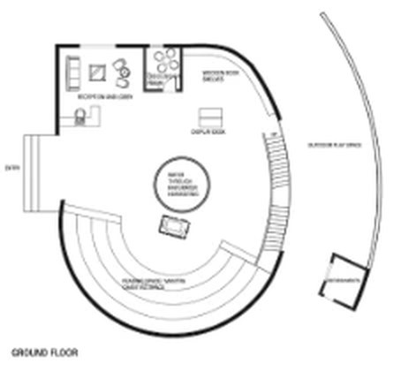

Usha Tapal.
Product Designer · 6D Technologies, Bengaluru
AI-native product designer
who thinks like an architect.
Strong foundations. Zero hallucinations.
RIU — ESG Copilot


Smart Dealer

NutraScan
Talk to the
RIU Copilot.
Not a chatbot. An AI teammate that works inside the report: it plans, reads evidence, drafts, and waits for your call.
BRSR FY 2025–26Principle 6 · Environment
58% filed
Fictional data
- Intent
- Plan
- Evidence
- Calculate
- Guardrails
- You decide
Pick a task. The Copilot works right inside the report: it plans, reads evidence, fills the answer and waits for you.
Structure first. Then the flow. Then the surface.




- Living with the community→User research
- Temple-like circulation→User flows
- Local brick, tight budget→Design in constraints
- Work clusters by need→Information architecture
- One linear movement axis→Navigation
- Skin over structure→UI on a design system
Magik CVM
−30% task timezeeproc

Architecture ↔ UX
Floor plans become information architecture
Away from the screen
Locked case studies contain client work. Ask me for access.
The journey so far
- 2025 → nowProduct Designer6D Technologies
- 2024 — 25Product DesignerRIU.ai · zeeproc
- 2022 — 23UX/UI DesignSupercode · FindPro.ai
- 2017 — 22B.ArchBGS School of Architecture
Spatial thinking. Digital clarity.
+91 99801 58546LinkedIn ↗Behance ↗Bengaluru, India